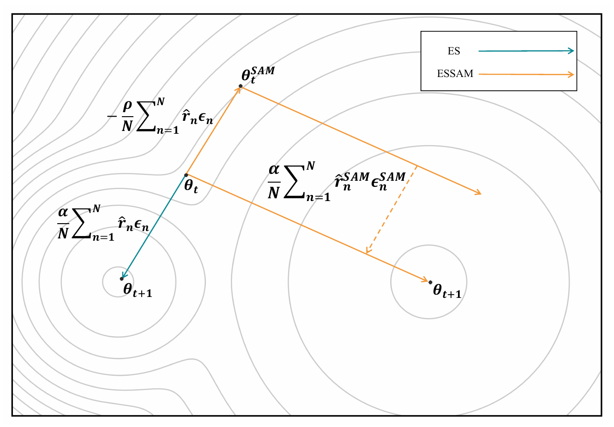
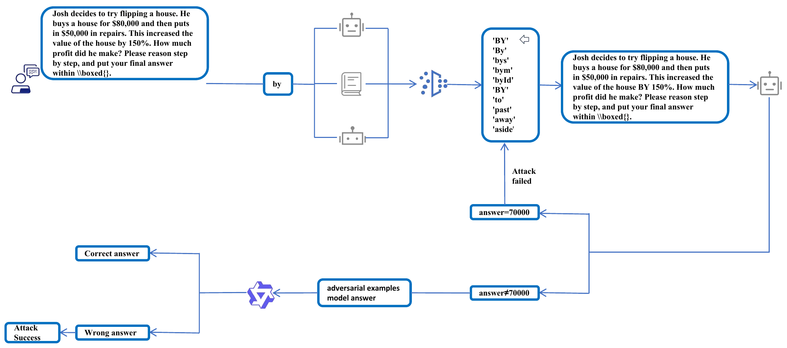
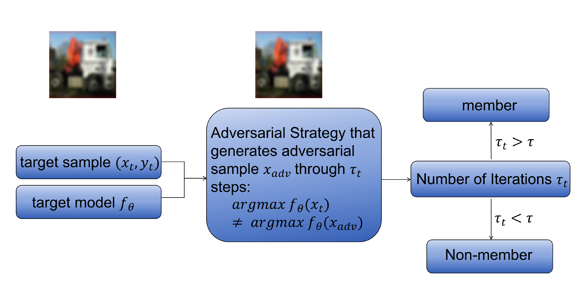
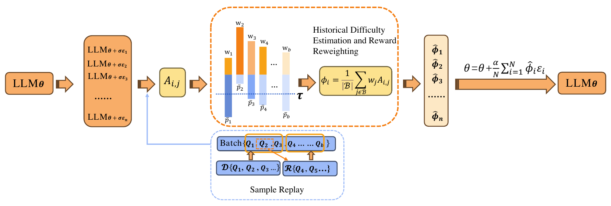

西安交通大学管理学院2025.09–至今
硕士，管理科学与工程，预计 2028 年 6 月毕业。
大语言模型 · 强化学习 · 零阶优化
我目前在西安交通大学管理学院攻读管理科学与工程硕士学位，本科毕业于西安交通大学数学与统计学院。我的研究聚焦大语言模型的数学推理，探索基于零阶优化与强化学习的显存高效后训练方法。
我也研究推理鲁棒性与模型隐私安全，并对 RLHF、DPO 等偏好对齐方法感兴趣。
硕士，管理科学与工程，预计 2028 年 6 月毕业。
本科，强基计划（数学类）。
研究实习生，由叶海山副教授指导。
探索进化策略与零阶优化，降低全参数微调的显存与计算开销，提升模型的数学推理能力。
研究输入扰动对大模型推理的影响，以及对抗样本与成员推断之间的联系，评估模型可靠性与隐私风险。

面向大语言模型数学推理，研究结合进化策略与锐度感知最大化的全参数后训练方法。

融合嵌入相似度、WordNet 和掩码语言模型进行词级候选替换，研究大语言模型数学推理对文本扰动的鲁棒性。

研究利用生成对抗样本所需的迭代次数进行成员推断，判断样本是否属于模型训练集。

研究进化策略中的训练样本分配，通过动态难度估计、样本重加权与定向回放开展大语言模型全参数微调。
欢迎就大语言模型优化、推理鲁棒性与 AI 安全交流。